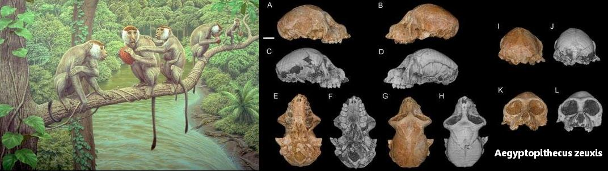
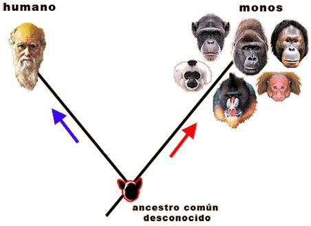
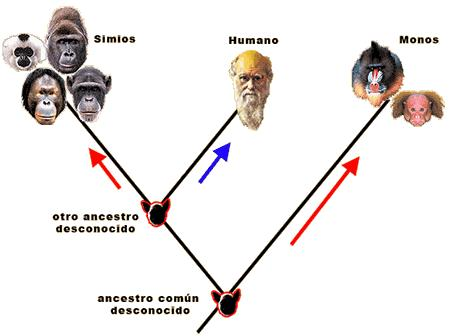
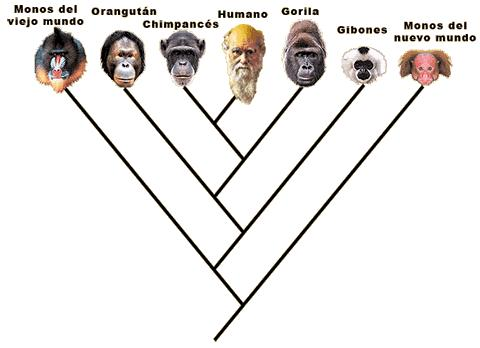
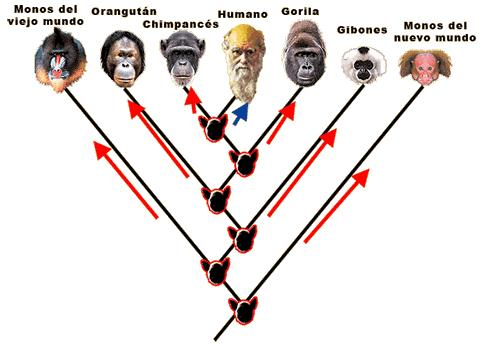
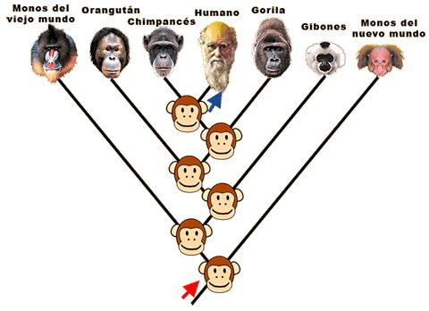

{kind=link}
Muchos divulgadores científicos han repetido cientos de veces que los seres humanos no descienden de los monos (o de los simios) sino que comparten un ancestro en común. ¿Es esta afirmación correcta?
Cuando Charles Darwin habló del origen del hombre, en una obra del mismo nombre, los religiosos se opusieron con fuerza a esta idea. Tanto entre creacionistas como en muchos evolucionistas se mantuvo la idea que la explicación científica proponía a los chimpancés como ancestros de la humanidad. Hoy en día sabemos que ninguna especie moderna es el ancestro de otra especie actual. El mal entendido de considerar el chimpancé como ancestro del hombre originó la aclaración mencionada al principio, pero que merece tambien corregirse. De eso trata este ensayo.
(Si busca información sobre las características anatómicas similares del ser humano con los demás primates diríjase al texto “El lugar del hombre en el grupo de los primates”
Si lo que desea es información sobre la evolución humana recomendamos el artículo que sobre el particular tiene Wikipedia)
¿Realmente descendemos del mono?
Por: Homo webensis (publicado en septiembre de 2001)
Una falsa duda divulgada sin mala intención.
Frecuentemente leemos en los libros o revistas de divulgación que no descendemos de los monos, sino que tenemos un antepasado común con ellos. A veces, incluso, se afirma que la idea de “descender del mono” es una vieja patraña. (Por ejemplo, James Trefil (1992), en “1001 cosas que todo el mundo debería saber sobre ciencia” RBA editores).
¿Quién es “el mono”?
En primer lugar, es necesario decir que “mono” no es un término taxonómicamente válido, es decir, no es una palabra científicamente admitida para designar a un grupo concreto de animales. El significado popular de la palabra “mono” tampoco está claramente delimitado; según la enciclopedia Larousse sirve para designar a los miembros del orden zoológico al que pertenecemos, es decir, Primates, pero según el Diccionario de la Real Academia de la Lengua Española, sólo se refiere al “suborden de los simios”. Estoy más de acuerdo con el DRAE que con la Larousse, pues pienso que hay muchos primates que nadie calificaría como “monos”; me refiero al enigmático tarsero y a los prosimios, es decir, a los lemures, con su “cara de perro”, a los loris, a los gálagos, al extraño aye-aye, etc.
Concretando: pienso que en general, cuando decimos popularmente “mono”, nos referimos a los miembros del suborden Anthropoidea exceptuando al hombre. Esto incluye al infraorden Platyrrhine (platirrinos o “monos del nuevo mundo”, es decir, todos los monos americanos), y al infraorden Catarrhine, los catarrinos, que incluye las familias Cercopithecoidea (papiones, mandriles, macacos, colobos, etc.) y Hominoidea (gibón, chimpancé, gorila, orangután y hombre), exceptuando al hombre. (He seguido a Benton, 1991. Paleontología y Evolución. Ed. perfils). Quizá habría que excluir también a los hombres-mono, es decir, a los australopitecos.
(Si algún lector no está de acuerdo con excluir a los prosimios del significado de la palabra “mono”, da lo mismo. Quiero decir que no afecta en absoluto a la argumentación posterior.)
¿Qué es “descender del mono”?
Cuando alguien dice que descendemos del mono solo puedo entender lo siguiente: descendemos de animales pertenecientes al grupo de los monos. Muchas personas inmediatamente se hacen la siguiente pregunta: ¿Por qué entonces no todos los monos se han convertido en humanos?. Hay múltiples respuestas posibles, pero no nos metamos en ellas. Usemos tan solo la lógica y un símil adecuado: Digamos sencillamente que la familia McFlaherty, estadounidense, desciende de irlandeses, sin que esto signifique que todos los irlandeses se hayan convertido en la familia McFlaherty. En biología evolutiva nada obliga a todos los miembros de un grupo a transformarse en lo mismo. De hecho, tal situación sería muy extraña.
Bien, la evidencia procedente de la paleontología, la anatomía comparada, la embriología, y la genética molecular, coincide en un hecho: el hombre desciende de animales que pertencieron al grupo de los monos y habrían sido clasificados como tales. Es decir, que entre nuestros antepasados hubo auténticos monos. Tanto si con “monos” nos referimos a los simios antropoides, como si nos referimos a todos los primates, se cumple que descendemos de monos.
Antepasados comunes: una obviedad
Volvamos ahora al principio: “no descendemos de los monos, sino que tenemos un antepasado común con ellos“. Considero errónea esta frase. En primer lugar, decir que tenemos un antepasado común con los monos no es decir gran cosa, pues tenemos un antepasado común con cualquier ser viviente, sea bacteria, elefante, margarita o champiñón (Esta es una de las más bellas ideas ciertas que ha concebido el hombre, concretamente Charles Darwin). En segundo lugar, el antepasado común entre todos los monos actuales y el hombre era un auténtico mono, luego los dos enunciados, “descendemos de los monos” y “tenemos un antepasado común con los monos” no son contradictorios, ni siquiera uno es más correcto que el otro, como da a entender la frase.

También había monos antiguamente
¿Por qué se divulga entonces esa frase? Parece que las intenciones eran buenas: intenta aclarar que nuestro antepasados simiescos no son monos actuales, sino formas fósiles. Lo que nos quieren decir quienes emplean esta frase es que el hombre no desciende del chimpancé, ni del gorila, ni del mono aullador, ni del macaco japonés, sino de primates que ya no existen como tales. Sin embargo, esta idea se ha plasmado de forma muy poco afortunada.
Los primates existen desde el paleoceno (65-57 millones de años) y los monos existen desde el oligoceno (34-23 millones de años). Todos los antepasados del hombre que vivieron entre esa época y la de la aparición de los primeros australopitecos, eran monos. Tenían aspecto de mono y comportamiento de mono (si es que es posible tal generalización). Cualquier persona que tuviera el privilegio de verlos, se referiría a ellos, sin vacilar, como “monos”. Descendemos de monos, monos antiguos, pero monos sin lugar a dudas.

Hombre y chimpancé
El análisis filogenético muestra que el antepasado común entre cualquier mono actual y nosotros era otro mono. Pero centrémonos en nuestros parientes más cercanos. Tanto la anatomía comparada como las técnicas moleculares revelan que el animal más estrechamente emparentado con nosotros es el chimpancé. Se calcula que el antepasado común vivió hace entre 7 y 5 millones de años, y posteriormente su linaje se dividió en dos: el de los chimpancés y el de los homínidos (primates bípedos: Australopithecus, Paranthropus, Homo). Si pusiéramos a los homínidos en orden de antigüedad, podríamos ver que los más antiguos son los que más se parecen al chimpancé, particularmente en el cráneo, manos y tórax. Esto no significa que descendamos del chimpancé, sino que el antepasado común entre hombres y chimpancés era muy parecido a este último. Al menos, era mucho más parecido al chimpancé que al hombre (con toda seguridad no andaba de pie, no hablaba, etc.). Se deduce de esto que, aparentemente, el chimpancé ha evolucionado (cambiado) morfológicamente y comportamentalmente en menor medida que que el hombre. Por otro lado, si el chimpancé es un mono, nuestro antepasado de hace 7-5 millones de años no lo era menos. Es decir, que descendemos de un mono muy parecido al chimpancé. Ni Darwin se equivocó esta vez, ni los temores de sus enfadados críticos eran infundados.

Darwin sí dijo que veníamos del mono
Por: Paleofreak (publicado en febrero de 2009)
Darwin sí dijo que venimos del mono. Hemos comentado varias veces aquí que la repetidísima frase “el hombre no desciende del mono, sino que tiene un antepasado común con él” es errónea. También lo es otra afirmación que suele emplearse (equivocadamente) contra los creacionistas: “Darwin nunca dijo que el hombre viniera del mono”.
Bueno, pues sí lo dijo. En su libro El Origen del Hombre, leemos:
The Simiadæ then branched off into two great stems, the New World and Old World monkeys; and from the latter, at a remote period, Man, the wonder and glory of the Universe, proceeded. (Los Simiadae se ramificaron entonces en dos grandes linajes, los monos del Nuevo Mundo y los del Viejo mundo; y, a partir de estos últimos, en una época remota, el Hombre, maravilla y gloria del Universo, procedió).
No es tan importante lo que dijera Darwin hace tantos años como lo que la zoología, la paleontología y la genética han corroborado después: que efectivamente descendemos de monos del viejo mundo (aunque no de las familias de monos del viejo mundo actuales, sino de otras, más antiguas).
Nuestros monísimos ancestros
Por: Paleofreak (publicado en mayo de 2006)
Tengo que repetir el mismo rollo. Ayer volví a discutir con personas que afirman que “no hemos evolucionado a partir de monos, sino que compartimos un antepasado común con ellos”. Y hace unos días, otra vez. Y en varias ocasiones en pocos meses. Existe una confusión generalizada sobre este asunto, y ahora que el Proyecto Gran Simio está de actualidad en España y se está produciendo un debate interesante, los falsos clichés se repiten constantemente.
Lo curioso de estos defensores de la evolución que niegan nuestro origen simiesco es que generalmente no tienen problemas para aceptar que descendamos de los peces o de los anfibios; en esos casos no ponen objecciones. Algunos me contestan que la frase “descendemos de monos” es poco apropiada porque aparentemente significa que venimos de alguna especie de mono actual. Pero ¿por qué iba a significar eso? Si yo digo que tengo antepasados italianos, nadie tiene por qué deducir que estén vivos ahora mismo en Italia.
He comprobado varias veces que lo que la mayoría de esta gente tiene en la cabeza es un esquema evolutivo erróneo como el que sigue:
Tendríamos un ancestro común, que supuestamente no sería un mono sino un prosimio, o incluso algún animal absolutamente desconocido. Este bicho raro da lugar a dos ramas: la de los monos, y la de los humanos. La flecha roja indicaría el proceso evolutivo “hacia los monos”, es decir, aquel que origina los rasgos característicos que comparten los monos y nos permiten identificarlos como tales. Lo malo de este esquema es que, científicamente, es un disparate.
Otras personas van un poco más allá y conciben una situación algo más compleja como la que sigue, que también es errónea aunque un poquito menos:
Aquí ya se distingue entre “monos” y “simios” (y más vale que no emplees ambas palabras como sinónimos como suelo hacer yo, porque esta gente te corre a gorrazos). Los monos evolucionarían (flecha roja derecha) a partir del misterioso antepasado, que también produciría otro misterioso antepasado, que a su vez se ramificaría dando lugar a los simios por una parte y a los humanos por la otra. Recordemos que, según las personas a las que me estoy refiriendo, no descendemos de ningún mono, así que los enigmáticos ancestros marcados en rojo en esquema no pueden ser monos. Lo que eso implica es que multitud de rasgos anatómicos comunes a simios, monos y humanos (cerebro relativamente grande, visión aguda, incisivos espatulados, sínfisis mandibular fusionada…) habrían evolucionado al menos tres veces independientemente.
Pero las relaciones de parentesco reales (o al menos estimadas con una fiabilidad altísima) entre los primates representados son más complicadas:
Efectivamente, no hay grandes ramificaciones “hacia los simios”, “hacia los monos” y “hacia los humanos”, sino que existe una estructura de parentesco anidada según la cual nosotros estamos más emparentados con unos monos (los del viejo mundo) que con otros (los americanos), y/o más cerca de unos simios (por ejemplo, el chimpancé) que de otros (como el orangután). Esta situación, que es científicamente cierta, convierte en absurda la afirmación de que “no venimos de los monos”. Para que fuera cierta, ninguno de los ancestros representados en el esquema siguiente podrían ser monos (tendrían que ser, de nuevo, prosimios o “misteriosos animales” de aspecto desconocido), y los rasgos que nos hacen decir “esto es un mono” habrían tenido que evolucionar de forma repetida un montón de veces; muchas más que las flechas rojas representadas, puesto que no estamos contando las a los monos y simios fósiles.
No nos compliquemos la vida, por favor. El principio de economía sugiere y las pruebas fósiles corroboran, que el tipo de animal al que llamamos “mono” sólo ha surgido una vez durante la evolución. Sustituyamos, pues, esos ancestros enmascarados por monos antiguos (aquí os he traído un dibujito de mono estándar y multiusos) . No pasa nada por decir que descendemos de monos. Es científicamente cierto. No es políticamente incorrecto (o no debería serlo), ni es pecado. ¡Ánimo!
Volver a la sección Ciencias de los orígenes
Comentarios
Comments powered by Disqus